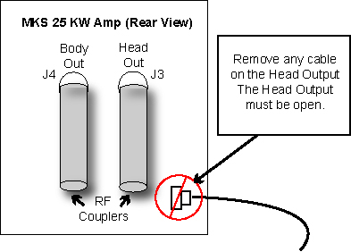
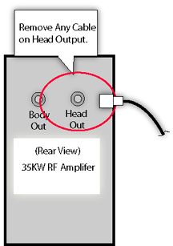

| NOTE: | If the amp at your site is a 25kW/35kW version with an LCD on the front, disconnect the Dummy Load from J3 directly as there are no RF couplers required for that amplifier. See Illustration 7. |
Illustration 6: Remove Any Cables From Head RF Out 25KW Amp

Illustration 7: Remove Any Cables From Head RF Out 25kW/35kW Amp
